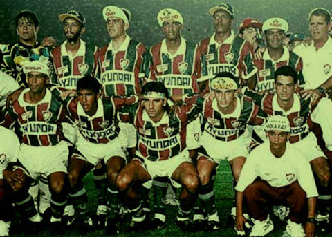

21 de julho de 1902

O Fluminense Football Club foi fundado em 21 de julho de 1902, na cidade do Rio de Janeiro, Brasil. O clube foi criado por Oscar Cox, um entusiasta do futebol, e um grupo de jovens da elite carioca. A intenção inicial era formar uma equipe de futebol para praticar o esporte que estava se popularizando no país naquela época
O nome "Fluminense" foi escolhido em referência ao estado do Rio de Janeiro, cujo nome significa "rio de janeiro" em português, representando a região onde o clube foi fundado. Desde sua criação, o Fluminense se tornou um dos clubes mais tradicionais e vitoriosos do futebol brasileiro, conquistando diversos títulos em diferentes épocas de sua história.
MAIORES ÍDOLOS DO FLUMINENSE
Telê Santana: Embora tenha alcançado maior destaque como treinador, Telê Santana foi um notável jogador do Fluminense nas décadas de 1950 e 1960. Ele foi um habilidoso atacante e fez parte da época áurea do clube.
Félix: O goleiro Félix é considerado um dos maiores ídolos na posição da história do Fluminense. Ele fez parte da equipe que conquistou o título brasileiro em 1970 e é lembrado por suas defesas importantes.
Assis e Washington (Casal 20): Assis e Washington formaram uma das duplas mais memoráveis da história do Fluminense na década de 1980. Conhecidos como "Casal 20", foram responsáveis por muitos gols e conquistas importantes para o clube.
Rivellino: O meia-atacante Rivellino é uma lenda do futebol brasileiro e mundial. Embora tenha se destacado também em outros clubes, sua passagem pelo Fluminense na década de 1970 é lembrada com carinho pelos torcedores.
Fred: Fred é um dos artilheiros mais prolíficos da história recente do Fluminense. Sua primeira passagem pelo clube, entre 2009 e 2016, foi marcada por conquistas, gols importantes e uma conexão especial com a torcida.